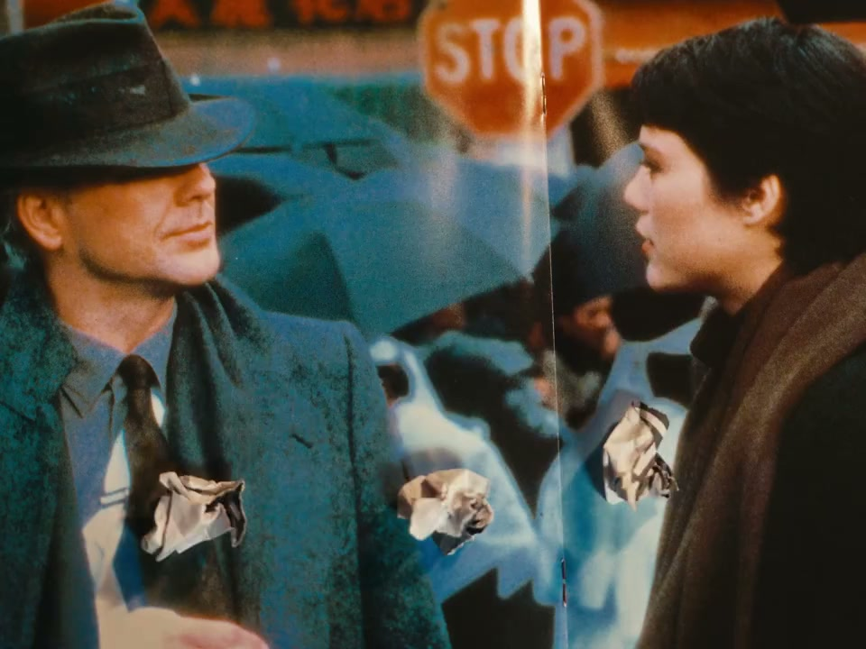

内容要点
这段视频围绕「做视频没灵感？出门！！！」展开，按时间介绍其中的关键环节。都市凭个灵感从哪。
开场引入
都市凭个灵感从哪。当然从闲逛中来。在北京遛在两天收获了一些灵感。希望三分钟以后可以全部变成你的灵感。夜风商场是维持五多海保留老师国营横计的商场。里面很多人和设施。从三三年前开业第一天起来这里工作。在和这位老员工对视一番之后。我把目光一向了这些有趣的字体。收集街头文字真的是非常适合闲逛的时候干的事情

[00:00] 开场引入相关画面。
Opening introduction footage.
核心内容
接下来我去看了很多笼子。有北京动物园里关大动物的大笼子。还有石礼和天椒市场里关小动物的小笼子。这倒是一个不错的元素。可以往里面装一些画面或是装自己。不知道能用在什么地方。先记下来好了。每多做一站北京一号线或者二号线。对苏联风格建筑的兴趣就会多一份。于是顺着这个线索找到了这个地方
操作演示
分拆出未来可能觉得目的地和可以拍的内容。这样线路组上的任意一站。都可以停在你的灵感库里。差点忘了。这才是苹果邀请我来北京的主要活动。观看五部Apple创意引领的创作者。用iPhone拍摄的短片。我们都已经非常清楚iPhone拍视频的能力。我前面很多画面都是用哪拍的。是现在看过很多iPhone拍的片子
[01:48] 操作演示相关画面。
Operational demonstration footage.
进阶技巧
你白天去过的地方。很可能就会出现在画面里。当电影结束以后。你又可以立刻回到故事发生的城市种。这种对照还是挺有意思的。同样令人上瘾了。还有北京的公园。也是去了一个又想去另一个。公园可以产生什么灵感呢。让我想想
[02:40] 进阶技巧相关画面。
Footage on advanced techniques.
总结
你白天去过的地方。